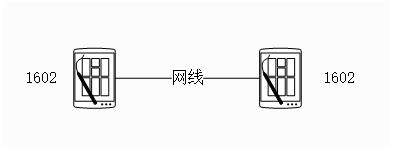
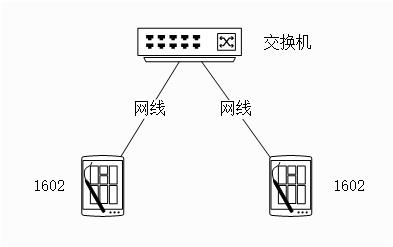

测试指南
3 Dec 2024
Read time: 1 minute(s)
准备工作
- 物料
-
交换机：最好是千兆交换机，因为千兆交换机兼容百兆，但百兆不兼容千兆
-
测试板：需要确定测试板的 PHY 端口的速度，千兆还是百兆
-
网线：可以进行路由器连接的网线
-
- 软件：确保 SDK 包含如下测试需要的网络软件
-
网速测试软件 主要是 iperf1.7.0，推荐 jperf2.0.2(图形化 iperf 工具)，可直观观察网速变化
-
组网拓扑
推荐两种组网拓扑，可依现实条件选择使用
- 直连
组网简单，但单机千兆 PHY 的兼容性不如交换机千兆 PHY，可能会出现 PHY 协商出错的问题
 - 交换机中转
多一层网络设备，但对千兆网络的兼容性更好

功能测试
- 配置好目标板的相关参数
- 按相应组网拓扑搭建好测试网络
- 通过 ping 对端的方式测试网络可以 ping 通
注意事项
-
注意检查系统启动时 MAC 模块的打印信息，确保无错误信息和错误参数
-
注意检查相应操作的驱动信息输出，确保双方的协商参数，协商步骤一致
速度测试
- 配置好目标板的相关参数，并打开 iperf 命令选项
- 按相应组网拓扑搭建好测试网络
- 使用 iperf 测试发送及接收的性能
注：
- 速度测试对系统资源使用非常高，注意检查测试时系统资源的瓶颈，以此作为出错信息的判断参考
兼容性测试
兼容性主要是两个模块的配合工作能力，系统有两个具有兼容性的实体（MAC 和 PHY），有一组对兼容性有大影响的参数（百兆和千兆）。
PHY 和 PHY 之间的协商由 PHY 的电气参数完成，无软件参与，因此如果有两个设备的 PHY 无法按设计协商一致，一般归为 PHY 的问题。
MAC 和 PHY 之间的协商一般由驱动完成，借助途径是 PHY 的读写寄存器，如果二者协商不成功，一般需要调整 PHY 的配置参数。
因此兼容性测试可以进行如下项目的测试：
- 百兆设备和百兆设备的兼容性测试
- 百兆设备和千兆设备的兼容性测试
- 千兆设备和千兆设备的兼容性测试
测试方法为：
- 拔插网线多次，均能正常识别拔插动作。
- 拔插网线多次，均能正常协商为预定工作模式和速录。
- 拔插网线多次，均能正常进行网络通信，ping 通。
性能测试
- 性能测试主要专注于时间和速度的跟踪，如果建立连接的时间，通信速度
- 性能测试可以使用 jperf 完成
- 性能也会被系统资源影响，如 CPU 和 DDR 资源
- 使用 jperf 进行网速测试时，client 端的 CPU 资源使用更多，因此如果 client 运行在 PC 等其他系统上，则性能值会增加
稳定性测试
性能测试需要进行多次触发性动作测试
- 100 次拔插操作，均能正常识别，正常建立连接正常通信
- 100 次拔插操作后，能正常进行通信
- 1000 次 enable/disable 操作后能正常通信
- 少量长时间数据通信，ping 48 小时不丢包
- 长时间压力，模块不进行自动重启，测试完成后，模块功能正常
高低温测试
测试在工控标准的高温和低温环境下：
- 功能正常
- 长时间通信正常
- 压力测试不导致模块自动重启